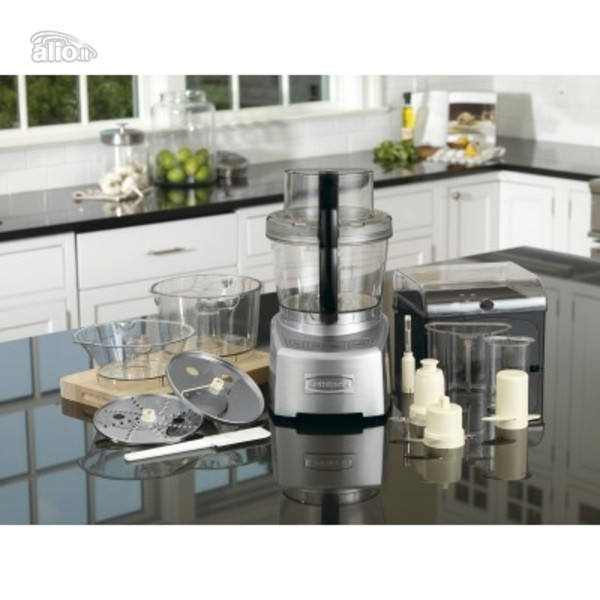
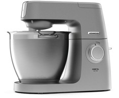
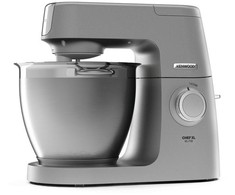

Virtuviniai kombainai smulki buitinė technika - Skelbiu.lt
2020.10.29 11:20
X Dėl geresnės Skelbiu.lt paslaugų kokybės naudojame slapukus (angl. cookies).
Naršydami toliau, patvirtinate, kad sutinkate su slapukais. Tai bet kada galėsite atšaukti, pakeisdami nustatymus. Skelbiu.lt slapukų politika . Lankomiausias
skelbimų portalas LT RU ( 0 ) Įsiminti skelbimai ( 0 ) Peržiūrėti skelbimai Paieškos ( 0 ) Prisijungti Registruotis Virtuviniai kombainai, Smulki buitinė technika (141) Gauti naujus skelbimus: Ekrane El. paštu + Įdėti skelbimą Įsiminti skelbimai (0) Skelbimų: 141 Atnaujinti viršuje Naujausi viršuje Atnaujinti viršuje Pigiausi viršuje Brangiausi viršuje
NEPRALEISKITE NAUJŲ SKELBIMŲ
Virtuviniai kombainai, Smulki buitinė technika
Gaukite naujus skelbimus į ekraną Gaukite naujusskelbimus el. paštu Klaipėda prieš 46 min.
Virtuvinis smulkintuvas
Delimano Clarity Chopper smulkintuvas.Naudotas porą kartų.Be defektų.Skirtas smulkinti:duona,vaisiai,daržovės,prieskoninės daržovės,sausainiai,šokaladas ir pan.Parduodu,nes nereikalingas tiesiogVisa info galite matyti foto Būklė: naudota 10 € Vilnius prieš 1 val.Apynaujis 800 W virtuvinis kombainas sodo derliui
Su daugybę priedų paduodamas apynaujis daugiafunkcinis 800 W virtuvinis kombainas. Puikiai veikiantis, tvarkingas, naudotas gal 2-3 kartus. Priedų ir įvarių peilių - visa dežė. Tarkavimo, sulčių spaudimo, plakimo, maišymo, smulkinimo,... Būklė: nauja 70 € Prienų r. prieš 1 val.Kokteilinė
Lobių skrynia - tai džiugių akimirkų apsipirkimo vietą. Parduodama geros būklės Kenwood firmos kokteilinė. Kokteilinės galingumas 500W. Korpusas plastikinis, 3 greičiai. Yra išbėgimo kranelis. Taip pat prie mūsų galite prisijungti ir Facebook ir... Būklė: naudota 20 € Vilnius prieš 1 val.Philips Kochmixer
Naujas Philips Kochmixer kaina 135 Būklė: nauja 135 € Kaunas, ... prieš 2 val.Superkam virtuvinius kombainus ir viska kitka
ISPARDUOTUVES-LOMBARDAI KAUNE,VILNIUJE (NAUJAS)SAVANORIU PR.263A, TEL 864233330, CHEMIJOS g.2 tel.864211110 PRIESAIS GIRSTUTI PALUKANOS NUO 2%,TAISOME TELEFONUS,PLANSETES,KOMPIUTERIUS IR KITA-SUPERKAME VISKAS KAS TURI KOMERCINE VERTE,LOMBARDAS... Būklė: nauja Ieško Vilnius prieš 2 val.Naujas pusryčių kombainas
3 in 1. kavavirė, orkaitė, kepimo paviršius. Būklė: nauja 12 € Šiauliai prieš 2 val.Naujas Philips Hr7745 turintis 33 funkcijas
Naujas kombainas turintis net 29–33 skirtingus maisto gaminimo metodus (vadinamus funkcijomis) nuo trupinimo ir maišymo iki įmaišymo, galite kurti beribę įvairovę patiekalų. Tikslus maisto gaminimo funkcijų skaičius priklauso nuo modelio: HR7735... Būklė: nauja 115 € Šiauliai prieš 2 val.Naujas kompaktiškas Maulinex kombainas
Visiškai naujas labai kompaktiškas ir kokybiškas virtuvinis kombaimas Maulinex D DF34 , pagamintas - Surinktas PRANCŪZIJOJE matmenys AxPxG 26x22x27 cm,Tiks net mazytei virtuvei! Kombainas atlieka šias funkcijas plaka kokteilius ,) šluotele ... Būklė: nauja 79 € Šilalės r. prieš 2 val.Buitinis aliejaus presas
1. Naujas Aliejaus spaudimo presas Techniniai duomenys: Info iš gamintojo: Product type: Home oil press machine Model name:DL-ZYJ05 Control mode: Automatic oil press Application: Family type Usage: Peanut, beans, sesame,... Būklė: nauja 249 € Vilnius prieš 2 val.Parduodu virtuvinius kombainus
Parduodu nauja is Vokietijos patikrinta virtuvini kombaina.kaina 75eu Garantijos neturi. Parduodu virtuvini kombaina raudonos spalvos 800w Klarstein is Vokietijos. Isbandytas viskas veikia visos dalys yra. Kokteiliu plaktuve neveikia... Būklė: nauja Reklama Kaunas, ... prieš 2 val.Nutribullet trintuvai 600 900w su garantija
Maloniai kviečiame apsilankyti mūsų naujoje internetinėje svetainėje www.prekes-visiems.lt I-VII: 8-21 Senosios obels g. 1, Kaunas! Prieš atvykdami būtinai pasiskambinkit. Kad mūsų kaina būtų... Būklė: nauja 29 € Panevėžys, ... prieš 3 val. RezervuotaTešlos maišyklė Bella Bianca
Labai tyli, galinga tešlos maišyklė 1200 W 6 pakopų reguliuojamas darbinis greitis 5.2 litrų nerūdijančio plieno dubuo, maks. 2 kg mišinio paruošimas ypač lengva naudotis ir paprasta valyti. Lietinių maišymo kablys - vienodas sumaišymas... Būklė: nauja 65 € Vilnius prieš 3 val.Delimano power blender
Delimano power blender naujas parduodu Būklė: nauja 17 € Vilnius, ... prieš 3 val.Superkame naujus virtuvinius kombainus
ISPARDUOTUVES-LOMBARDU TINKLAS VILNIUJE IR KAUNE.VISA PARA.PALUKANOS NUO 2%,TAISOME TELEFONUS,PLANSETES,KOMPIUTERIUS IR KITA-SUPERKAME VISKAS KAS TURI KOMERCINE VERTE,LOMBARDAS-PALUKANOS NUO 2%.PINIGU YRA VISADA,LAUKIAM! GALIM ATVYKTI PAS JUS... Būklė: nauja Ieško Vilnius prieš 4 val.Bosch blenderis
Visaks kas yra nuotraukoje. be dėžės Būklė: nauja 33 € Kaunas, ... prieš 4 val.Trintuvas Touch 3 Quantum Sidabrinis
JR Touch 3 Quantum, tylus trintuvas su bešepetėliniu varikliu JR Ultra Touch 3 Quantum yra vienas iš pirmųjų trintuvų, turinčių bešepetėlinį indukcinį variklį. Šis variklio tipas gerokai pranašesnis už standartinius varinius variklius,... Būklė: nauja 289 € Kaunas, ... prieš 4 val.Trintuvas Touch 4 Quantum / Sidabrinis / Raudonas
Kas yra Quantum T4? JR Quantum Touch 4 trintuvas. Vienas iš „Touch“ serijos trintuvų patekusių tarp geriausių 2019 metais. 4-osios kartos profesionalus trintuvas Iki 45000 apsisukimų per minutę greitis, iš 2238 vatų, didžiausio 3,5 AG galios... Būklė: nauja 469 € Kaunas prieš 4 val.Virtuviniai kombainai
Nauji iš vokietijos . Pilnas kombainas smėlio spalvos 100€ . Tešlos maišyklė raudona 60€. Yra ir kitokių tešlos maišyklių . Būklė: nauja 60 € Kėdainių r. prieš 5 val.Siemens / Vokietija 400 W
SIEMENS 400 W Vokietija naudotas, tvarkingas, viskas matyti fotografijose diskas ir peiliai puikiai išlaikyti, talpus indas visas komplektas kaip buvo pirkta stovis: 7/10 KAINA: 27,00 EUR yra galimybė siųsti LPaštu Lietuvos teritorijoje su... Būklė: naudota 27 € Vilnius, ... prieš 7 val.Virtuves Kombaino peiliai
Parduodu naujus priedus prie virtuves kombainu, kokiam nezinau gal Kas atras sau, viskas matosi foto kaina 5 eu =1 vnt Ukmerges g Vilnius Būklė: nauja 5 € Kaunas prieš 1 d.Parduodu naudotą virtuvinį kombainą Moulinex
Parduodu naudotą Moulinex virtuvinį kombainą. Moulinex Ovatio 3 Duo, bazinė komplektacija (smulki ir stambesnė pjaustyklė, riekelių pjaustyklė, kapoklė, kokteilinė/plaktuvas), 700W. Būklė: naudota 30 € Panevėžys, ... prieš 1 d."Russell Hobbs" rankinis blenderis "Desire 3-in-1"
Galingumas: 500 W Spalva: raudona Iki 12,000 aps/min kai naudojamas strypas Komplekte: 700 ml talpos indas 500 ml talpos indas peilis nerūdijančio plieno šluotelė 2 greičių pasirinkimas Nerūdijančio plieno peiliukai Būklė: naudota 15 € Panevėžys, ... prieš 1 d.Maisto ruošimo kombainas Kenwood kcook Multi Ccl40
Naudotas, tačiau viskas puikiai veikia. Laiką taupantis „kCook Multi“ maisto ruošimo kombainas padės lengvai ir paprastai sukurti platų skanių namų patiekalų asortimentą. Plačiausias temperatūros diapazonas 30–180 Didelis karštis. Žema... Būklė: naudota 260 € Panevėžys, ... prieš 1 d.Russell Hobbs Retro 25180-56 virtuvinis kombainas
850w Funkcijos: pjaustymas, maišymas, smulkinimas, tešlos minkymas Kokteiline 1.5l Smulkinimo indas 2.3l 3 greicio rezimai i Utena, Kupiški, Anykščius yra galimybe pristatyti i rankas Būklė: nauja 65 € E. parduotuvės prekė Bulvių tarkavimo mašina Migiris BETM-1 topocentras.lt, technorama.lt, bigbox.lt nuo 55.99 € E. parduotuvės prekė KitchenAid 5KSM125EER pigu.lt, ogmina.lt, topocentras.lt nuo 434 € Daugiau prekių Kainos.lt » 1 2 3 4 5 6 Įsiminti skelbimai Įdėkite skelbimąPopuliarios paieškos:
philips hr
philips
kombainas
kenwood
virtuvini kombaina bosch
braun
virtuvinis kombainas
kitchenaid
Prisijunk ir rask savo įsimintus skelbimus visur – kompiuteryje, telefone, planšetėje ARBA Jungtis su Facebook Jungtis su Google Skelbiu.lt pagalba: +370 664 55727 Darbo laikas: I-V 08:20 - 17:00 Naudojimo taisyklės / D.U.K. Kontaktai Svetainės struktūra D I G I N E T- Virtuviniai kombainai internetu | pigu.lt
- Virtuviniai kombainai | Universalus virtuvinis kombainas ...
- Virtuviniai kombainai - avitela.lt
- Virtuviniai kombainai internetu – TECHNORAMA
- Virtuviniai kombainai smulki buitinė technika - Skelbiu.lt
- Virtuviniai kombainai | akcija parduotuvėje RDE.LT
- Daugiafunkciniai, galingi VIRTUVINIAI KOMBAINAI Žema kaina ...
- Virtuviniai kombainai pigiau, platus pasirinkimas ir ...
- Virtuviniai kombainai | Virtuvinis kombainas internetu
- Virtuviniai kombainai | ZEMAKAINA.LT
- Virtuviniai kombainai internetu | pigu.lt
Virtuviniai kombainai Virtuvinis kombainas – pagalbininkas kiekvienoje virtuvėje. Pjaustyklė, plaktuvas, mikseris, net sulčiaspaudė telpa viename prietaise. Tam, kad nebereikėtų dešimties kitų virtuvės technikos elementų, maisto smulkinimo ir maišymo darbus patikėkite virtuviniam kombainui.
- Virtuviniai kombainai | Universalus virtuvinis kombainas ...
Šie prietaisai yra vieni funkcionaliausių – virtuviniai kombainai nustebins galimybių gausa, padės sutaupyti vietos ir sumažins svarbiausiems prietaisams skiriamas išlaidas. Pas mus Jūsų laukia įvairiems kulinariniams eksperimentams pritaikyti virtuvės kombainai – užsukite ir suraskite sau tinkamiausią!
- Virtuviniai kombainai - avitela.lt
Virtuviniai kombainai. Prekių puslapyje. 12 12 24 36 48 Prekių filtras Rikiuoti pagal: Rikiuoti Kaina, nuo žemiausios. Nuo A iki Z Nuo Z iki A Kaina, nuo žemiausios Kaina, nuo aukščiausios Rikiuoti pagal: Rikiuoti Kaina, nuo žemiausios.
- Virtuviniai kombainai internetu – TECHNORAMA
Virtuviniai kombainai internetu: nemokamas pristatymas per 1-2 d.d. prekių grąžinimas per 14 d. 100% saugus pirkimas. Tel.: 8 700 88770
- Virtuviniai kombainai smulki buitinė technika - Skelbiu.lt
Paprastai apvalūs virtuviniai kombainai yra aukštesni, todėl gali netilpti į spintelę, tačiau daugiau skirtumų nėra – tiek vieni, tiek kiti kombainai jūsų maistą smulkins vienodai gerai. Funkcionalumas. Toli gražu ne su visais virtuviniais kombainais galima malti mėsą, trinti bulves, spausti sultis ir minkyti tešlą. Todėl ...
- Virtuviniai kombainai | akcija parduotuvėje RDE.LT
Virtuviniai kombainai – tai trintuvė, tarka, plaktuvas, sulčiaspaudė ir dar daug kitų prietaisų viename, tad kaip išsirinkti tinkamiausią ir labiausiai jūsų lūkesčius atitiksiantį kombainą? Pagrindiniai dalykai, į kuriuos derėtų atkreipti dėmesį – tai prietaiso sudėtinės dalys, dubens dydis, galingumas, greitis ir ...
- Daugiafunkciniai, galingi VIRTUVINIAI KOMBAINAI Žema kaina ...
Virtuviniai kombainai internetinėje parduotuvėje pigiau! Didelis Virtuvinių kombainų pasirinkimas. Galimybė pasinaudoti lizingo akcija. Interneto svetainė naudoja slapukus (angl. cookies), kad rinktų statistinę informaciją apie lankytojus ir sektų jų veiksmus tiesioginės rinkodaros vykdymo tikslais. Jei sutinkate, paspauskite ...
- Virtuviniai kombainai pigiau, platus pasirinkimas ir ...
Virtuviniai kombainai. Gamintojų Bosch, Kenwood, Philips virtuviniai kombainai. Akcija internetinėje parduotuvėje RDE.LT.
- Virtuviniai kombainai | Virtuvinis kombainas internetu
Virtuviniai kombainai Filtruoti (0) Rodoma: 1 - 48 iš 67. Rūšiuoti pagal: „Draugų rato“ nariams. Norite geresnės kainos - tapkite „Draugų rato“ nariu Tapti nariu-22%. 62,00 € / vnt. 79,00 € / vnt. Turime sandėlyje ...
- Virtuviniai kombainai | ZEMAKAINA.LT
Kiekvienas, kuris savo namų virtuvėje turi virtuvinį kombainą, neabejotinai patvirtins, jog virtuviniai kombainai – nepamainomi prietaisai gaminant pačius įvairiausius patiekalus: apkepus, troškinius, pyragus, sriubas ir kt. Jei virtuvinio kombaino dar neturite, nė nedvejokite, kad tai bus viena geriausių investicijų – netruksite įsitikinti, kiek daug galimybių sukantis ...
Virtuviniai kombainai Virtuvinis kombainas – pagalbininkas kiekvienoje virtuvėje. Pjaustyklė, plaktuvas, mikseris, net sulčiaspaudė telpa viename prietaise. Tam, kad nebereikėtų dešimties kitų virtuvės technikos elementų, maisto smulkinimo ir maišymo darbus patikėkite virtuviniam kombainui.
Šie prietaisai yra vieni funkcionaliausių – virtuviniai kombainai nustebins galimybių gausa, padės sutaupyti vietos ir sumažins svarbiausiems prietaisams skiriamas išlaidas. Pas mus Jūsų laukia įvairiems kulinariniams eksperimentams pritaikyti virtuvės kombainai – užsukite ir suraskite sau tinkamiausią!
Virtuviniai kombainai. Prekių puslapyje. 12 12 24 36 48 Prekių filtras Rikiuoti pagal: Rikiuoti Kaina, nuo žemiausios. Nuo A iki Z Nuo Z iki A Kaina, nuo žemiausios Kaina, nuo aukščiausios Rikiuoti pagal: Rikiuoti Kaina, nuo žemiausios.
Virtuviniai kombainai internetu: nemokamas pristatymas per 1-2 d.d. prekių grąžinimas per 14 d. 100% saugus pirkimas. Tel.: 8 700 88770
Paprastai apvalūs virtuviniai kombainai yra aukštesni, todėl gali netilpti į spintelę, tačiau daugiau skirtumų nėra – tiek vieni, tiek kiti kombainai jūsų maistą smulkins vienodai gerai. Funkcionalumas. Toli gražu ne su visais virtuviniais kombainais galima malti mėsą, trinti bulves, spausti sultis ir minkyti tešlą. Todėl ...
Virtuviniai kombainai – tai trintuvė, tarka, plaktuvas, sulčiaspaudė ir dar daug kitų prietaisų viename, tad kaip išsirinkti tinkamiausią ir labiausiai jūsų lūkesčius atitiksiantį kombainą? Pagrindiniai dalykai, į kuriuos derėtų atkreipti dėmesį – tai prietaiso sudėtinės dalys, dubens dydis, galingumas, greitis ir ...
Virtuviniai kombainai internetinėje parduotuvėje pigiau! Didelis Virtuvinių kombainų pasirinkimas. Galimybė pasinaudoti lizingo akcija. Interneto svetainė naudoja slapukus (angl. cookies), kad rinktų statistinę informaciją apie lankytojus ir sektų jų veiksmus tiesioginės rinkodaros vykdymo tikslais. Jei sutinkate, paspauskite ...
Virtuviniai kombainai. Gamintojų Bosch, Kenwood, Philips virtuviniai kombainai. Akcija internetinėje parduotuvėje RDE.LT.
Virtuviniai kombainai Filtruoti (0) Rodoma: 1 - 48 iš 67. Rūšiuoti pagal: „Draugų rato“ nariams. Norite geresnės kainos - tapkite „Draugų rato“ nariu Tapti nariu-22%. 62,00 € / vnt. 79,00 € / vnt. Turime sandėlyje ...
Kiekvienas, kuris savo namų virtuvėje turi virtuvinį kombainą, neabejotinai patvirtins, jog virtuviniai kombainai – nepamainomi prietaisai gaminant pačius įvairiausius patiekalus: apkepus, troškinius, pyragus, sriubas ir kt. Jei virtuvinio kombaino dar neturite, nė nedvejokite, kad tai bus viena geriausių investicijų – netruksite įsitikinti, kiek daug galimybių sukantis ...

 
